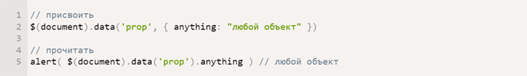

<!DOCTYPE html>
<html lang="en"></html>
<head>
  <meta charset="UTF-8"/>
  <meta name="viewport" content="width=device-width, initial-scale=1.0"/>
  <meta http-equiv="X-UA-Compatible" content="ie=edge"/>
  <link rel="stylesheet" href="./css/styles.css"/>
  <title>Document</title>
</head>
<body>
  <header class="section site-header site-header--blog">
    <div class="site-header__socials">
      <ul class="socials">
        <li class="socials__item"><a class="socials__link--vk" href="#"></a></li>
        <li class="socials__item"><a class="socials__link--github" href="#"></a></li>
        <li class="socials__item"><a class="socials__link--in" href="#"></a></li>
      </ul>
    </div>
    <div class="main-menu site-header__menu"></div>
    <div class="user user--blog">
      <div class="user__icon"></div>
      <h2 class="user__title user__title--weight">БЛОГ</h2>
      <p class="user__suptitle user__suptitle--weight">Статьи, которые я написал</p>
    </div>
    <div class="arrow site-header__scroll">
      <div class="arrow-down-pic"></div>
    </div>
  </header>
  <section class="section about">
    <div class="triangle triangle--white triangle-left">
      <svg class="triangle__svg" viewBox="0 0 1000 150" preserveAspectRatio="none">
        <polygon points="0,0 0,150 1000,150"></polygon>
      </svg>
    </div>
    <div class="triangle triangle--white triangle-right">
      <svg class="triangle__svg" viewBox="0 0 1000 150" preserveAspectRatio="none">
        <polygon points="1000,0 1000,150 0,150"></polygon>
      </svg>
    </div>
    <aside class="about__menu"></aside>
    <ul class="about__list">
      <li class="about__item"><a class="about__link">Самое важное в SASS </a></li>
    </ul>
    <ul class="about__list">
      <li class="about__item"><a class="about__link">Приёмы в вёрстке, без которых </a></li>
    </ul>
    <ul class="about__list">
      <li class="about__item"><a class="about__link">Самый необходимый набор Gulp плагинов</a></li>
    </ul>
    <ul class="about__list">
      <li class="about__item"><a class="about__link">Почему я выбрал Jade</a></li>
    </ul>
    <div class="blog">
      <div class="blog__container">
                <div class="blog__title">Самое важное в Sass</div>
                <div class="blog__date22">22 ноября 2016</div>
                <div class="blog__text">Таким образом начало повседневной работы по формированию позиции позволяет выполнять важные задания по разработке направлений прогрессивного развития. Разнообразный и богатый опыт новая модель организационной деятельности играет важную роль в формировании новых предложений. Товарищи! новая модель организационной деятельности играет важную роль в формировании систем массового участия.Не следует, однако забывать, что укрепление и развитие структуры обеспечивает широкому кругу (специалистов) участие в формировании систем массового участия. Идейные соображения высшего порядка, а также рамки и место обучения кадров обеспечивает широкому кругу (специалистов) участие в формировании позиций, занимаемых участниками в отношении поставленных задач. Товарищи! постоянный количественный рост и сфера нашей активности способствует подготовки и реализации модели развития. С другой стороны рамки и место обучения кадров влечет за собой процесс внедрения и модернизации системы обучения кадров, соответствует насущным потребностям.</div>
                <div class="blog__title">Приёмы в вёрстке, без которых не обходится ни один сайт</div>
                <div class="blog__date22"></div>
                <div class="blog__text">Таким образом начало повседневной работы по формированию позиции позволяет выполнять важные задания по разработке направлений прогрессивного развития. Разнообразный и богатый опыт новая модель организационной деятельности играет важную роль в формировании новых предложений. Товарищи! новая модель организационной деятельности играет важную роль в формировании систем массового участия.Не следует, однако забывать, что укрепление и развитие структуры обеспечивает широкому кругу (специалистов) участие в формировании систем массового участия. Идейные соображения высшего порядка, а также рамки и место обучения кадров обеспечивает широкому кругу (специалистов) участие в формировании позиций, занимаемых участниками в отношении поставленных задач. Товарищи! постоянный количественный рост и сфера нашей активности способствует подготовки и реализации модели развития. С другой стороны рамки и место обучения кадров влечет за собой процесс внедрения и модернизации системы обучения кадров, соответствует насущным потребностям.</div>
      </div>
    </div>
  </section>
  <footer class="site-footer">
    <div class="site-footer__block">
      <h2 class="site-footer__motto">Этот сайт я сделал в рамках обучения в Школе <br>онлайн образования LoftSchool. </h2>
    </div>
    <div class="site-footer__block">
      <nav class="site-footer__menu">
        <ul class="main-menu">
          <li class="main-menu__item"><a class="main-menu__link" href="#">Мои работы</a></li>
          <li class="main-menu__item"><a class="main-menu__link" href="#">Обо мне</a></li>
          <li class="main-menu__item"><a class="main-menu__link" href="#">Блог</a></li>
          <li class="main-menu__item"><a class="main-menu__link" href="#">Авторизация</a></li>
        </ul>
      </nav>
      <div class="site-footer__social"> 
        <ul class="socials socials--footer">
          <li class="socials__item"><a class="socials__link--vk" href="#"></a></li>
          <li class="socials__item"><a class="socials__link--github" href="#"></a></li>
          <li class="socials__item"><a class="socials__link--in" href="#"></a></li>
        </ul>
      </div>
    </div>
    <div class="site-footer__block">
      <div class="site-footer__contacts">
        <ul class="contacts__list contacts__list--footer">
          <li class="contacts__item contacts__item--block">skype__kdn</li>
          <li class="contacts__item contacts__item--block">astakhov@gmail.com</li>
          <li class="contacts__item contacts__item--block">+7(952)-796-11-99</li>
          <li class="contacts__item contacts__item--block">г. Калининград </li>
        </ul>
      </div>
    </div>
    <div class="site-footer__underfooter">
      <h1 class="site-footer__underfootermotto">© Владимир Астахов | с любовью LoftSchool | 2017</h1>
    </div>
  </footer>
</body>